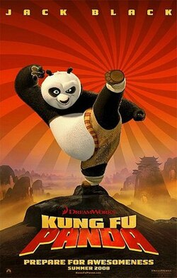
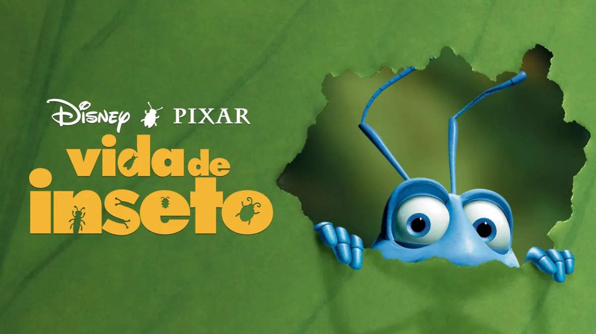

O CineWorld HTML é o seu portal de entretenimento cinematográfico. Aqui você encontra filmes em cartaz, trailes imperdíveis, curiosidades do mundo do cinema, informações sobre os maiores atores e muito mais.
Prepare a pipoca e aproveite a sessão!

Sinopse: Po, é um panda atrapalhado que sonha em se tornar um grande mestre de Kung Fu. Quando é escolhido como o Guerreiro Dragão, ele precisa aprender a acreditar em si mesmo para salvar o Vale da Paz.

Sinopse: Flik é uma formiga inventora que tenta salvar sua colônia dos gafanhotos liderados por Hopper. Para isso, ele parte em uma aventura cheia de confusões e amizade.